건축기사 (2014-05-25 기출문제)
1과목: 건축계획
1. 다음 중 사무소 건축의 기둥간격 결정 요소와 가장 거리가 먼 것은?
- 책상배치의 단위
- 주차배치의 단위
- 엘리베이터의 설치 대수
- 채광상 층높이에 의한 깊이
(정답률: 77%)

2. 공포를 기둥 위에만 배열한 것을 주심포 형식이라고 한다. 다음 중 주심포 형식의 건축물에 해당하는 것은?
- 봉정사 극락전
- 화암사 극락전
- 봉정사 대웅전
- 창경궁 명정전
(정답률: 71%)
3. 호텔건축에 관한 설명으로 옳은 것은?
- 일반적으로 호텔건축의 형태는 공공(Public) 부분에 의하여 결정된다.
- 숙박관계부분의 연면적에 대한 비율은 리조트 호텔이 커머셜 호텔보다 높다.
- 연회장의 출입은 명확한 동선을 위해 호텔 주출입구 및 로비를 통하도록 하는 것이 좋다.
- 시티 호텔은 부지의 제약으로 복도면적을 작게 하고 고층화에 적합한 평면형이 요구된다.
(정답률: 66%)
4. 도서관의 출납 시스템에 관한 설명으로 옳지 않은 것은?
- 폐가식은 대출 절차가 복잡하다.
- 자유개가식은 대출 수속이 간편하다.
- 폐가식은 열람실에서 감시가 필요하다.
- 자유개가식은 소규모 아동 열람에 편리하다.
(정답률: 75%)
5. 미술관 전시실의 순회형식 중 연속순로형식에 관한 설명으로 옳은 것은?
- 연속된 전시실의 한 쪽 복도에 의해 각 실을 배치한 형식이다.
- 중앙에 큰 홀을 두고 그 주위에 각 전시실을 배치한 형식이다.
- 각 실에 직접 들어갈 수 있고 필요시에는 부분적으로 폐쇄할 수 있다.
- 단순하고 공간절약의 장점이 있으나 여러 실을 순서별로 통해야 하는 불편이 있다.
(정답률: 84%)
6. 공장의 레이아웃 형식 중 생산에 필요한 모든 공정과 기계류를 제품의 흐름에 따라 배치하는 형식은?
- 고정식 레이아웃
- 혼성식 레이아웃
- 제품중심의 레이아웃
- 공정중심의 레이아웃
(정답률: 81%)
7. 주택 단지 내 도로의 형태 중 쿨데삭(Cul-de-Sac) 형에 대한 설명으로 옳지 않은 것은?
- 보차분리가 이루어진다.
- 보행로의 배치가 자유롭다.
- 주거환경의 쾌적성 및 안전성 확보가 용이하다.
- 대규모 주택단지에 주로 사용되며, 최대길이는 1km 이하로 한다.
(정답률: 82%)
8. 교학건축 건축물인 성균관의 구성에 속하지 않는 것은?
- 동재
- 존경각
- 천추전
- 명륜당
(정답률: 70%)
9. 주택 주방의 작업삼각형의 꼭지점에 해당하지 않는 것은?
- 냉장고
- 개수대
- 가열대
- 배선대
(정답률: 87%)
10. 상점의 동선계획에 관한 설명으로 옳지 않은 것은?
- 직원동선은 되도록 짧게 한다.
- 상품동선과 직원동선은 교차해서는 안 된다.
- 고객의 상점 내 동선은 길고 원활하게 한다.
- 피난에 관련된 동선은 고객이 쉽게 인지하도록 한다.
(정답률: 80%)
11. 사무소 건축의 코어형식 중 구조코어로서 가장 바람직한 것은?
- 편코어형
- 외코어형
- 양측코어형
- 중심코어형
(정답률: 88%)
12. 다음은 주택단지의 관리사무소에 관한 설명이다. ( )안에 알맞은 것은?
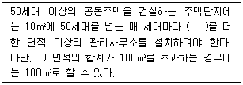
- 100cm2
- 500cm2
- 1000cm2
- 1500cm2
(정답률: 62%)
13. 아파트 평면형식에 관한 설명으로 옳지 않은 것은?
- 홀형은 통행부 면적이 작아서 건물의 이용도가 높다.
- 집중형은 채광ㆍ통풍 조건이 좋아 기계적 환경조절이 필요하지 않다.
- 중복도형은 대지에 대해서 건물 이용도가 높으나, 프라이버시가 좋지 않다.
- 홀형은 계단 또는 엘리베이터 홀로부터 직접 주거 단위로 들어가는 형식이다.
(정답률: 85%)
14. 도서관에서 능률적인 작업용량으로서 30만권을 수장할 서고의 면적으로 가장 알맞은 것은?
- 600m2
- 900m2
- 1000m2
- 1500m2
(정답률: 84%)
15. 극장의 평면형식에 관한 설명으로 옳지 않은 것은?
- 프로시니엄형이 일반적으로 사용된다.
- 프로시니엄형은 연기자와 관객의 접촉면이 한정되어 있다.
- 애리나형은 가까운 거리에서 관람하면서 많은 관객을 수용할 수 있다.
- 애리나형은 배경이 한 폭의 그림과 같은 느낌을 주게 되어 전체적인 통일의 효과를 얻는데 가장 좋은 형태이다.
(정답률: 88%)
16. 학교 운영방식에 관한 설명으로 옳지 않은 것은?
- 종합교실형은 초등학교 저학년에 적합한 유형이다.
- 교과교실형은 소지품 보관장소에 대한 고려가 요구된다.
- 교과교실형은 모든 교실이 특정한 교과 수업을 위해 만들어진 형식이다.
- 달톤형은 전 학급을 2분단으로 나누고 한편이 일반 교실을 사용할 때 다른 한편은 특별교실을 이용하는 형식이다.
(정답률: 84%)
17. 고딕 성당에 관한 설명으로 옳지 않은 것은?
- 중앙집중식 배치를 지배적으로 사용하였다.
- 건축 형태에서 수직성을 강하게 강조하였다.
- 수평 방향으로 통일되고 연속적인 공간을 만들었다.
- 고딕 성당으로는 랭스 성당, 아미앙 성당 등이 있다.
(정답률: 52%)
18. 엘리베이터 설계시 고려사항으로 옳지 않은 것은?
- 군 관리운전의 경우 동일 군 내의 서비스 층은 같게 한다.
- 승객의 층별 대기시간은 평균 운전간격 이하가 되게 한다.
- 건축물의 출입층이 2개 층이 되는 경우는 각각의 교통 수요량 이상이 되도록 한다.
- 백화점과 같은 대규모 매장에서는 일반적으로 승객수송의 70~80%를 분담하도록 계획한다.
(정답률: 80%)
19. 다음 중 병원건축에서 간호단위의 병상수가 과다한 경우 나타나는 문제점과 가장 관계가 먼 것은?
- 병실 간호능력이 저하된다.
- 간호사들의 동선이 길어진다.
- 전체 환자의 상태를 파악하기 어려워진다.
- 환자 보호자들에 의한 간호가 불가능해진다.
(정답률: 88%)
20. 종합병원건축에서 면적구성 비율이 가장 높은 부분은?
- 병동부
- 관리부
- 외래진료부
- 중앙진료부
(정답률: 89%)
2과목: 건축시공
21. 땅에 접하는 바닥 콘크리트의 경우 그림과 같이 벽에 인근한 부분을 두껍게 하는 이유는?
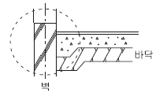
- 철근의 부착력 증진
- 전단력에 대한 보강
- 휨에 대한 보강
- 압축력에 대한 보강
(정답률: 78%)
22. 콘크리트 재료분리의 원인으로 볼 수 없는 것은?
- 물-시멘트비가 크고 모르타르 부분의 점성이 작은 경우
- 타설높이가 너무 높은 경우
- 굵은 골재의 형상이 편평하고 세장하지 않은 경우
- 시공연도가 지나치게 큰 경우
(정답률: 59%)
23. 시멘트 액체방수에 대한 설명으로 옳지 않은 것은?
- 값이 저렴하고 시공 및 보수가 용이한 편이다.
- 바탕의 상태가 습하거나 수분이 함유되어 있더라도 시공할 수 있다.
- 바탕콘크리트의 침하, 경화 후의 건조수축, 균열 등 구조적 변형이 심한 부분에도 사용할 수 있다.
- 옥상 등 실외에서는 효력의 지속성을 기대할 수 없다.
(정답률: 71%)
24. 지반조사 중 보링에 대한 설명으로 옳지 않은 것은?
- 보링의 깊이는 일반적인 건물의 경우 대략 지지 지층 이상으로 한다.
- 채취시료는 충분히 햇빛에 건조시키는 것이 좋다.
- 부지 내에서 3개소 이상 행하는 것이 바람직하다.
- 보링 구멍은 수직으로 파는 것이 중요하다.
(정답률: 83%)
25. CM(Construction Management)에 대한 설명으로 옳은 것은?
- 설계단계에서 시공법까지는 결정하지 않고 요구성능만을 시공자에게 제시하여 시공자가 자유로이 재료나 시공방법을 선택할 수 있는 방식이다.
- 시공주를 대신하여 전문가가 설계자 및 시공자를 관리하는 독립된 조직으로 시공주, 설계자, 시공자의 조정을 목적으로 한다.
- 설계 및 시공을 동일회사에서 해결하는 방식을 말한다.
- 2개 이상의 건설회사가 공동으로 공사를 도급하는 방식을 말한다.
(정답률: 78%)
26. 콘크리트의 크리프 변형량이 크게 되는 경우에 해당되지 않는 것은?
- 부재의 단면치수가 클수록
- 하중이 클수록
- 단위수량이 많을수록
- 재하 시 재령이 짧을수록
(정답률: 51%)
27. 벽두께 1.0B, 벽면적 30m2 쌓기에 소요되는 벽돌의 정미량은? (단, 기본벽돌(190×90×57) 사용)
- 3,900 매
- 4,095 매
- 4,470 매
- 4,604 매
(정답률: 83%)
28. 건설공사현장에서 보통콘크리트를 KS규격품인 레미콘으로 주문할 때의 요구항목이 아닌 것은?
- 잔골재의 조립률
- 굵은 골재의 최대 치수
- 호칭강도
- 슬럼프
(정답률: 78%)
29. 조적조의 치장 줄눈 표기로 옳지 않은 것은?
- 민줄눈 :

- 오목줄눈 :

- 내민줄눈 :

- 빗줄눈 :

(정답률: 69%)
30. 건축물에 이용하는 타일 중 흡수율이 적어 겨울철 동파의 우려가 가장 작은 것은?
- 도기질 타일
- 석기질 타일
- 토기질 타일
- 자기질 타일
(정답률: 69%)
31. Network(네트워크) 공정표의 장점이라고 볼 수 없는 것은?
- 작업 상호간의 관련성을 알기 쉽다.
- 공정계획의 초기 작성시간이 단축된다.
- 공사의 진척 관리를 정확히 할 수 있다.
- 공기 단축 가능 요소의 발견이 용이하다.
(정답률: 81%)
32. 공정관리에서의 네트워크(Network)에 관한 용어로서 관계없는 것은?
- 커넥터(Connector)
- 크리티컬 패스(Critical Path)
- 더미(Dummy)
- 플로우트(Float)
(정답률: 80%)
33. 고력볼트 접합에 관한 설명으로 옳지 않은 것은?
- 현대건축물의 고층화, 대형화 추세에 따라 소음이 심한 리벳은 현재 거의 사용하지 않고 볼트접합과 용접접합이 대부분을 차지하고 있다.
- 토크쉐어형 고력볼트는 조여서 소정의 축력이 얻어지면 자동적으로 핀테일이 차단되는 구조로 되어 있다.
- 고력볼트의 조임기구는 토크렌치와 임팩트렌치 등이 있다.
- 고력볼트의 접합형태는 모두 마찰접합이며, 마찰접합은 하중이나 응력을 볼트가 직접 부담하는 방식이다.
(정답률: 81%)
34. 기준점(Bench Mark)에 대한 설명 중 옳지 않은 것은?
- 신축할 건축물 높이의 기준이 되는 주요 가설물이다.
- 건물의 각부에서 헤아리기 좋은 1개소에 설치한다.
- 바라보기 좋고 공사에 지장이 없는 곳에 설치한다.
- 공사가 완료된 뒤라도 건축물의 침하, 경사 등을 확인하기 위하여 사용되는 수도 있다.
(정답률: 80%)
35. 유리내부 중심에 철, 황동, 알루미늄 등의 금속망을 삽입하고 압착성형한 판유리로 파손방지, 내열효과가 있으며 도난방지, 방화 목적으로 사용하는 유리는?
- 강화유리
- 무늬유리
- 망입유리
- 복층유리
(정답률: 77%)
36. 다음 공종에 사용되는 건설기계로 옳지 않은 것은?
- 토공사 - 파워 쇼벨(Power Shovel)
- 지정공사 - 래머(Rammer)
- 철골공사 - 가이데릭(Guy Derick)
- 콘크리트공사 - 오우거(Auger Machine)
(정답률: 68%)
37. 콘크리트 펌프 사용 시 굵은골재의 최대치수가 20mm인 경우 압송관의 호칭치수 기준으로 옳은 것은?
- 60mm 이상
- 80mm 이상
- 100mm 이상
- 125mm 이상
(정답률: 54%)
38. 선홈통 공사에 대한 설명 중 옳지 않은 것은?
- 선홈통이 지반에 접하는 하부에는 보호관을 설치한다.
- 선홈통 홈걸이의 간격은 보통 0.9m 마다 줄 바르게 고정한다.
- 접합겹침은 3cm 이상 꽂아 넣어 납땜한다.
- 선홈통은 건물의 관에 대한 고려와 동파를 방지하기 위하여 가능한 한 콘크리트 기둥속이나 조적벽체 속에 매설한다.
(정답률: 70%)
39. 합성수지의 일반적인 성질에 대한 설명으로 옳지 않은 것은?
- 전성, 연성이 크고 피막이 강하고 광택이 있다.
- 접착성이 크고 기밀성, 안정성이 큰 것이 많다.
- 내열성, 내화성이 작고 비교적 저온에서 연화, 연질된다.
- 강재와 비교하여 강성은 작으나 탄성계수가 커 다방면에 활용도가 높다.
(정답률: 38%)
40. 철골가공 및 용접에 있어 자동용접의 경우 용접봉의 피복재 역할로 쓰이는 분말상의 재료를 무엇이라 하는가?
- 플럭스(Flux)
- 슬래그(Slag)
- 시드(Sheath)
- 샤모테(Chamotte)
(정답률: 69%)
3과목: 건축구조
41. 판보는 웨브에 전단응력, 휨응력 또는 지압응력에 의한 좌굴이 일어날 가능성이 있는데 이를 방지하기 위하여 사용되는 것은?
- 사이드 앵글(Side Angle)
- 스캘럽(Scallop)
- 스티프너(Stiffener)
- 새그 로드(Sag Rod)
(정답률: 67%)
42. 주철근으로 사용된 D22 철근 180° 표준갈고리의 구부림 최소 내면 반지름(γ)으로 옳은 것은?
- γ = 1 db
- γ = 2 db
- γ = 2.5 db
- γ = 3 db
(정답률: 64%)
43. 다음 조건과 같은 압축부재에서 사용되는 띠철근의 수직간격은 얼마 이하이어야 하는가?
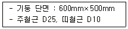
- 400mm
- 450mm
- 480mm
- 500mm
(정답률: 56%)
44. 강도설계법으로 설계된 그림과 같은 보에서 이음이 없는 경우 요구되는 보의 최소폭 b를 구하면? (단, 전단철근의 구부림 내면반지름을 고려하며, 굵은 골재의 최대치수는 25mm, 피복두께 40mm이며, 주철근의 직경은 22mm, 스터럽의 직경은 10mm로 계산)(오류 신고가 접수된 문제입니다. 반드시 정답과 해설을 확인하시기 바랍니다.)
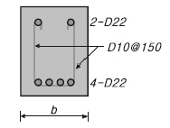
- 287.9mm
- 3⑤.9mm
- 310.3mm
- 317.5mm
(정답률: 51%)
45. 직경(D) 30mm, 길이(L) 4m인 강봉에 90kN의 인장력이 작용할 때 인장응력(σt)과 늘어난 길이(△L)는 얼마인가? (단, 강봉의 탄성계수 E = 200,000 MPa )
- σt = 127.3 MPa, △L = 1.43mm
- σt = 127.3 MPa, △L = 2.55mm
- σt = 132.5 MPa, △L = 1.43mm
- σt = 132.5 MPa, △L = 2.55mm
(정답률: 53%)
46. 스터럽으로 보강된 휨 부재의 최외단 인장철근의 순인장 변형률 εt가 0.004일 경우 강도감소계수 ø로 옳은 것은? (단, fy = 400MPa )(오류 신고가 접수된 문제입니다. 반드시 정답과 해설을 확인하시기 바랍니다.)
- 0.65
- 0.717
- 0.783
- 0.817
(정답률: 46%)
47. 다음 그림과 같은 압축재 H-200×200×8×12 가 부재 중앙지점에서 약축에 대해 휨변형이 구속되어 있다. 이 부재의 탄성좌굴응력도을 구하면? (단, 단면적 A = 63.53×102mm2, Ix = 4.72×107mm4, Iy = 1.60×107mm4, E = 2⑤,000 MPa )
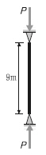
- 252 N/mm2
- 186 N/mm2
- 132 N/mm2
- 108 N/mm2
(정답률: 55%)
48. 그림과 같이 O점에 모멘트가 작용할 때 OB부재와 OC부재에 분배되는 모멘트가 같게 하려면 OC부재의 길이를 얼마로 해야 하는가?
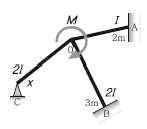
- 3/2 m
- 3 m
- 2/3 m
- 9/4 m
(정답률: 62%)
49. 단면 b×d = 300mm×550mm이고, 모래경량 콘크리트를 사용한 철근콘크리트 보에서 콘크리트가 부담할 수 있는 공칭전단강도(Vc)는? (단, KCI2012기준, fck = 21MPa이다.)
- 95 kN
- 107 kN
- 126 kN
- 132 kN
(정답률: 40%)
50. 그림과 같은 부재의 부정정 차수를 구하면?
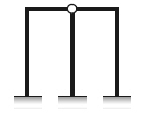
- 정정
- 1차 부정정
- 3차 부정정
- 4차 부정정
(정답률: 73%)
51. 다음 골조-아웃리거 시스템에 관한 설명 중 ( )안에 가장 알맞은 것은?
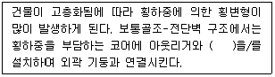
- 벨트트러스
- 프리스트레스트 빔
- 합성슬래브
- 슈퍼칼럼
(정답률: 69%)
52. 그림과 같은 앵글(Angle)의 유효 단면적으로 옳은 것은? (단, Ls-50×50×6 사용, a=5.644cm2, d=1.7cm)
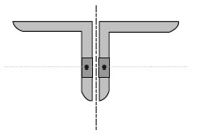
- 8.0 cm2
- 8.5 cm2
- 9.0 cm2
- 9.25 cm2
(정답률: 52%)
53. 다음 그림과 같이 D16철근이 90° 표준갈고리로 정착되었다면 이 갈고리의 소요정착길이(lhb)는 약 얼마인가? (단, KCI2012적용,
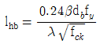
, 철근도막계수와 경량콘크리트 계수는 1, D16의 공칭지름 = 15.9mm, fck = 21MPa, fy = 400MPa임)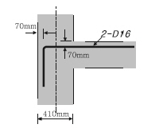
- 233 mm
- 243 mm
- 253 mm
- 263 mm
(정답률: 48%)
54. 다음 구조용 강재의 명칭에 대한 내용으로 틀린 것은?
- SM - 용접구조용 압연강재(KS D 3515)
- SS - 일반구조용 압연강재(KS D 3503)
- SN - 내진건축구조용 냉간성형 각형강관(KS D 3864)
- STK - 일반구조용 탄소강관(KS D 3566)
(정답률: 79%)
55. 그림과 같은 중도리에 S=8kN의 전단력이 작용할 때 단면 내에 생기는 최대 전단응력도는?
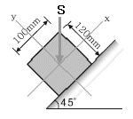
- 1 MPa
- 2 MPa
- 3 MPa
- 4 MPa
(정답률: 56%)
56. 다음과 같은 조건의 단면을 가진 부재의 균열모멘트 Mcr을 구하면?
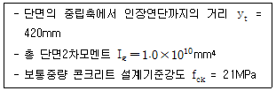
- 50.6 kN⋅m
- 53.3 kN⋅m
- 62.5 kN⋅m
- 68.8 kN⋅m
(정답률: 56%)
57. 다음 그림에서 O점에 대한 모멘트 Mo를 구하면? (단, 시계방향 모멘트 +)
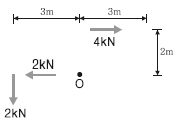
- 0 kN⋅m
- 2 kN⋅m
- -2 kN⋅m
- -4 kN⋅m
(정답률: 63%)
58. 기초설계 시 인접대지와의 관계로 편심기초를 만들고자 한다. 이때 편심기초의 지반력이 균등하도록 하기 위하여 어떤 방법을 이용함이 가장 타당한가?
- 지중보를 설치한다.
- 기초 면적을 넓힌다.
- 기둥의 단면적을 크게 한다.
- 기초 두께를 두껍게 한다.
(정답률: 79%)
59. 철골조의 래티스형식 조립압축재에 대한 구조제한에 대한 내용이다. ( )안에 알맞은 것은?
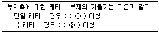
- ① : 50° , ② : 40°
- ① : 60° , ② : 40°
- ① : 50° , ② : 45°
- ① : 60° , ② : 45°
(정답률: 70%)
60. 그림과 같은 단면의 x, y축에 대한 단면상승모멘트 Ixy는 얼마인가?
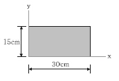
- 10,000 cm4
- 22,500 cm4
- 33,750 cm4
- 50,625 cm4
(정답률: 41%)
4과목: 건축설비
61. 터보식 냉동기에 관한 설명으로 옳지 않은 것은?
- 흡수식에 비해 소음 및 진동이 적다.
- 임펠러의 원심력에 의해 냉매가스를 압축한다.
- 대용량에서는 압축효율이 좋고 비례 제어가 가능하다.
- 중ㆍ대형 규모의 중앙식 공조에서 냉방용으로 사용된다.
(정답률: 77%)
62. 엘리베이터의 안전장치에 속하지 않는 것은?
- 균형추
- 완충기
- 조속기
- 전자브레이크
(정답률: 62%)
63. 배수트랩의 봉수 파괴 원인으로 옳지 않은 것은?
- 서징 현상
- 증발 현상
- 모세관 현상
- 자기 사이폰 작용
(정답률: 62%)
64. 실내에서 발생하는 취기와 수증기 등이 다른 공간으로 유출되지 않도록 실내가 부압이 되도록 하는 환기방식은?
- 자연환기
- 급기팬과 배기팬의 조합
- 급기팬과 자연배기의 조합
- 자연급기와 배기팬의 조합
(정답률: 60%)
65. 발전기에 적용되는 법칙으로 유도기전력의 방향을 알기 위하여 사용되는 법칙은?
- 오옴의 법칙
- 키르히호프의 법칙
- 플레밍의 왼손 법칙
- 플레밍의 오른손 법칙
(정답률: 66%)
66. 온열 감각에 영향을 미치는 물리적 온열 4요소에 속하지 않는 것은?
- 기온
- 습도
- 일사량
- 복사열
(정답률: 69%)
67. 변전실 면적에 영향을 주는 요소로 볼 수 없는 것은?
- 변압기 용량
- 발전기 용량
- 큐비클의 종류
- 수전전압 및 수전방식
(정답률: 65%)
68. 다음 중 열감지기의 종류에 속하지 않는 것은?
- 정온식
- 광전식
- 차동식
- 보상식
(정답률: 58%)
69. 다음과 같은 특징을 갖는 에스컬레이터 배열방법은?
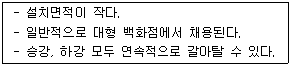
- 복렬형
- 교차형
- 병렬형
- 단열중복형
(정답률: 71%)
70. 다음 조건에 있는 실의 틈새바람에 의한 현열부하는?
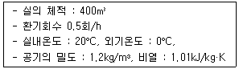
- 약 654W
- 약 972W
- 약 1,347W
- 약 1,654W
(정답률: 73%)
71. 간접조명방식에 관한 설명으로 옳지 않은 것은?
- 조명률이 높다.
- 실내면 반사율이 크다.
- 분위기를 중요시하는 조명에 적합하다.
- 그림자가 적고 글레어가 적은 조명이 가능하다.
(정답률: 79%)
72. 다음의 보일러 출력표시 방법 중 그 값이 가장 큰 것은?
- 정미출력
- 정격출력
- 상용출력
- 과부하출력
(정답률: 68%)
73. 광원에 의해 비춰진 면의 밝기 정도를 나타내는 것은?
- 휘도
- 광도
- 조도
- 광속발산도
(정답률: 66%)
74. 공기조화방식 중 전수방식에 관한 설명으로 틀린 것은?
- 덕트 스페이스가 필요 없다.
- 실내의 배관에 의해 누수의 우려가 있다.
- 송풍공기가 없어 실내공기의 오염이 적다.
- 열매체가 증기 또는 냉ㆍ온수로 열의 운송동력이 공기에 비해 적게 소요된다.
(정답률: 48%)
75. 다음은 옥내소화전설비에서 전동기에 따른 펌프를 이용하는 가압송수장치에 관한 설명이다. ( )안에 알맞은 것은?
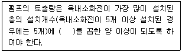
- 70 L/min
- 130 L/min
- 260 L/min
- 350 L/min
(정답률: 70%)
76. 급수가압 펌프에 관한 설명으로 옳지 않은 것은?
- 흡입관은 개별 배관으로 한다.
- 유량과 양정에 의해 동력이 정해진다.
- 설치 위치나 장소 및 설치 조건 등에 따라 펌프의 형식이 결정된다.
- 펌프의 흡입관에는 곡률 반경이 작은 엘보를 사용하며 직관부는 짧게 해 준다.
(정답률: 69%)
77. 전기샤프트(ES)에 관한 설명으로 옳지 않은 것은?
- 각층마다 같은 위치에 설치한다.
- 전력용과 정보통신용은 공용으로 사용해서는 안 된다.
- 전기샤프트의 면적은 보, 기둥 부분을 제외하고 산정한다.
- 현재 장비 이외에 장래의 배선 등에 대한 여유성을 고려한 크기로 한다.
(정답률: 72%)
78. 강관의 배관 부속품에 관한 설명으로 옳지 않은 것은?
- 엘보는 배관을 굴곡할 때 사용된다.
- 티와 크로스는 분기관을 낼 때 사용된다.
- 플러그는 구경이 다른 관을 접합할 때 사용된다.
- 소켓, 유니온, 플랜지는 직관을 접합할 때 사용된다.
(정답률: 58%)
79. 급탕배관에서 관의 신축을 고려한 조치사항으로 옳지 않은 것은?
- 수평관에 일정한 구배를 둔다.
- 배관 중간에 신축이음을 설치한다.
- 배관의 굽힘부분에는 스위블 이음으로 접합한다.
- 건물의 벽관통부분의 배관에는 슬리브를 사용한다.
(정답률: 37%)
80. 다음 설명에 알맞은 통기관의 종류는?
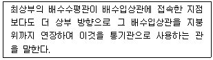
- 루프통기관
- 신정통기관
- 결합통기관
- 각개통기관
(정답률: 67%)
5과목: 건축법규
81. 허가권자가 가로구역별로 건축물의 최고높이를 지정 ㆍ 공고할 때 고려하여야 할 사항이 아닌 것은?
- 도시미관 및 경관계획
- 해당 도시의 장래 발전계획
- 해당 가로구역이 접하는 도로의 길이
- 도시ㆍ군관리계획 등의 토지이용계획
(정답률: 46%)
82. 피난 용도로 쓸 수 있는 광장을 옥상에 설치하여야 하는 대상 기준으로 옳지 않은 것은?
- 5층 이상인 층이 유흥주점의 용도로 쓰는 경우
- 5층 이상인 층이 업무시설의 용도로 쓰는 경우
- 5층 이상인 층이 판매시설의 용도로 쓰는 경우
- 5층 이상인 층이 장례식장의 용도로 쓰는 경우
(정답률: 46%)
83. 비상용승강기의 승강장 및 승강로 구조에 관한 기준 내용으로 옳지 않은 것은?
- 옥내 승강장의 바닥면적은 비상용승강기 1대에 대하여 6m2 이상으로 한다.
- 각 층으로부터 피난층까지 이르는 승강로를 단일구조로 연결하여 설치하여야 한다.
- 피난층이 있는 승강장의 출입구로부터 도로 또는 공지에 이르는 거리가 30m 이하로 한다.
- 승강장에는 배연설비를 설치하여야 하며, 외부를 향하여 열 수 있는 창문 등을 설치하여서는 안된다.
(정답률: 77%)
84. 피난층 또는 피난층의 승강장으로부터 건축물의 바깥쪽에 이르는 통로에 경사로를 설치하여야 하는 대상 건축물에 속하지 않는 것은?
- 교육연구시설 중 학교
- 연면적이 5,000m2인 의료시설
- 연면적이 5,000m2인 판매시설
- 제1종 근린생활시설 중 공중화장실
(정답률: 39%)
85. 허가대상 건축물이라 하더라도 미리 특별자치시장 ㆍ 특별자치도지사 또는 시장 ㆍ 군수 ㆍ 구청장에게 신고를 하면 건축허가를 받은 것으로 보는 경우에 속하지 않는 것은?
- 바닥면적의 합계가 85m2 이내의 신축
- 바닥면적의 합계가 85m2 이내의 증축
- 바닥면적의 합계가 85m2 이내의 재축
- 연면적이 200m2 미만이고 3층 미만인 건축물의 대수선
(정답률: 68%)
86. 국토의 계획 및 이용에 관한 법령상 도시 ㆍ 군관리계획의 내용에 속하지 않는 것은?
- 투기과열지구의 지정 또는 변경에 관한 계획
- 개발제한구역의 지정 또는 변경에 관한 계획
- 기반시설의 설치ㆍ정비 또는 개량에 관한 계획
- 용도지역ㆍ용도지구의 지정 또는 변경에 관한 계획
(정답률: 48%)
87. 다음 중 부설주차장에 설치하여야 하는 최소 주차대수가 가장 많은 시설물은?
- 15타석을 갖춘 골프연습장
- 정원이 300명인 옥외수영장
- 시설면적이 3,000m2인 위락시설
- 시설면적이 3,000m2인 판매시설
(정답률: 73%)
88. 층수가 16층이며, 각 층의 거실면적이 1,000m인 관광호텔에 설치하여야 하는 승용승강기의 최소 대수는? (단, 8인승 승강기의 경우)
- 3대
- 4대
- 5대
- 6대
(정답률: 57%)
89. 주차장법령상 자주식 주차장의 형태에 속하지 않는 것은?
- 지하식
- 지평식
- 기계식
- 건축물식
(정답률: 54%)
90. 용적률 산정에 사용되는 연면적에 포함되는 것은?
- 지하층의 면적
- 층고가 2.1m인 다락의 면적
- 준초고층 건축물에 설치하는 피난안전구역의 면적
- 건축물의 경사지붕 아래에 설치하는 대피공간의 면적
(정답률: 79%)
91. 국토의 계획 및 이용에 관한 법률에 따른 국토의 용도지역 구분에 속하지 않는 것은?
- 도시지역
- 농림지역
- 관리지역
- 보전지역
(정답률: 45%)
92. 건축법상 일반이 사용할 수 있도록 대통령령으로 정하는 기준에 따라 소규모 휴식시설 등의 공개 공지 또는 공개 공간을 설치하여야 하는 대상지역에 속하지 않는 것은? (단, 특별자치시장ㆍ군수ㆍ구청장이 도시화의 가능성이 크다고 인정하여 지정ㆍ공고하는 지역 제외)
- 준주거지역
- 준공업지역
- 전용주거지역
- 일반주거지역
(정답률: 63%)
93. 건축법령상 리모델링이 쉬운 구조에 속하지 않는 것은?
- 구조체가 철골구조로 구성되어 있을 것
- 구조체에서 건축설비, 내부 마감재료 및 외부 마감재료를 분리할 수 있을 것
- 개별 세대 안에서 구획된 실의 크기, 개수 또는 위치 등을 변경할 수 있을 것
- 각 세대는 인접한 세대와 수직 또는 수평방향으로 통합하거나 분할할 수 있을 것
(정답률: 80%)
94. 건축법령상 고층 건축물의 정의로 옳은 것은?
- 층수가 30층 이상이거나 높이가 90m 이상인 건축물
- 층수가 30층 이상이거나 높이가 120m 이상인 건축물
- 층수가 50층 이상이거나 높이가 150m 이상인 건축물
- 층수가 50층 이상이거나 높이가 200m 이상인 건축물
(정답률: 83%)
95. 제1종 일반주거지역 안에서 건축할 수 있는 건축물에 속하지 않는 것은?
- 단독주택
- 노유자시설
- 공동주택 중 아파트
- 제1종 근린생활시설
(정답률: 81%)
96. 다음 중 이륜자동차전용 외의 노외주차장으로서 출입구가 1개인 경우 차로의 너비가 다른 주차형식은?
- 평행주차
- 교차주차
- 45도 대향주차
- 60도 대향주차
(정답률: 56%)
97. 국토의 계획 및 이용에 관한 법령에 따른 기반시설에 속하지 않는 것은?
- 아파트
- 방재시설
- 공간시설
- 환경기초시설
(정답률: 56%)
98. 다음은 건축선에 따른 건축제한에 관한 기준 내용이다. ( )안에 알맞은 것은?
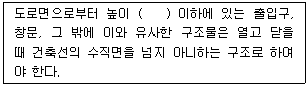
- 1.5m
- 2.5m
- 3.5m
- 4.5m
(정답률: 65%)
99. 다음은 일조 등의 확보를 위한 건축물의 높이 제한에 관한 기준 내용이다. ( )안에 알맞은 것은?
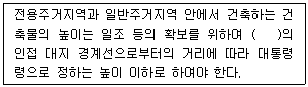
- 정동방향
- 정서방향
- 정남방향
- 정북방향
(정답률: 73%)
100. 지방건축위원회의 심의사항에 속하지 않는 것은?
- 건축선의 지정에 관한 사항
- 층수가 16층인 건축물의 건축에 관한 사항
- 종교시설의 용도로 쓰는 바닥면적의 합계가 3,000m2인 건축물의 건축에 관한 사항
- 분양을 목적으로 하는 건축물로서 건축조례로 정하는 용도 및 규모에 해당하는 건축물의 건축에 관한 사항
(정답률: 50%)